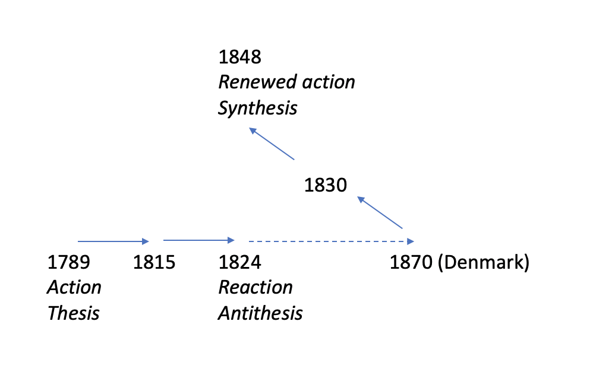

by
An introduction to the underlying concepts, composition, method as well as the editorial and translational history of the Main Currents.
Georg Brandes’ Hovedstrømninger i det 19de Aarhundredes Litteratur udkom i seks bind 1872-1890 og senere i reviderede og oversatte udgaver.
Det var Brandes’ mål med de seks bind at se på den europæiske litteratur som en enhed og at udrede en række fællestræk i den tyske, franske og engelske litteratur i perioden fra 1789 til 1848. Dermed anlagde han som en af de første europæiske litteraturhistorikere et komparativt synspunkt, bl.a. med det motiv at kaste lys over den danske litteratur, der efter Brandes’ opfattelse var 40 år bagud i forhold til den overordnede europæiske udvikling. ”Den sammenlignende Litteraturbetragtning har den dobbelte Charakter at nærme det Fremmede til os saaledes, at vi kunne tilegne os det, og at fjerne vort Eget fra os saaledes, at vi kunne overskue det” hed det i den indledende forelæsning, der samtidig fastslog Brandes’ ledende principper: ”Troen paa den frie Forsknings Ret og paa den frie Tankes endelige Seir.” (Brandes 1872a:8 og 7).
Gennem alle årene holdt Brandes de fleste af de forelæsninger, der lå til grund for de publicerede seks bind, i sin egenskab af privatdocent ved Københavns Universitet. Ledende embedsmænd og politikere holdt ham ude fra det professorat i æstetik, der i 1872 var blevet ledigt, så han ernærede sig resten af sit liv som fri skribent. Dog fik han i 1902 ad politisk vej tildelt professortitel og en tilsvarende løn ”til fri videnskabelig virksomhed”, betalt af universitetets midler, men uden at blive ansat ved Københavns Universitet (jf. Pelle Oliver Larsen 2016:141 og 386-391).
Brandes gav sin fremstilling form af et drama i seks akter med liberalismens historie som det strukturskabende træk. I forordet til sjette udgave fra 1923 skrev Brandes indledningsvis:
Hovedstrømninger fortæller et Stykke europæisk Sjælehistorie, idet Værket fremstiller Udviklingsgangen i Hovedlandenes Literatur gennem det 19. Aarhundredes første Halvdel. Værkets Anlæg er politisk, ikke literært (Brandes 1923:3).
Som opspil skildrede han 1700-tallets revolutionære bevægelser, kulminerende med Den Franske Revolution i 1789. Efter revolutionen, den første aktion, fulgte re-aktionen, ligesom der på en tese følger en antitese. Med Napoleons nederlag og Wienerkongressen i 1814-1815 fandt kirke og stat hinanden i de katolske dele af Europa; ortodoksi og autoritet blev på ny bærende principper i samfundet. Endelig fulgte overvindelsen af reaktionen, dvs. en fornyet aktion. Den blev intoneret af Den Græske Frihedskrig mod det osmanniske styre (1821-1829) og blev i Brandes’ fremstilling markeret som et afgørende omslag med Byrons heltedød i Grækenland i 1824. Herfra fulgtes den liberale bevægelse via den franske Julirevolution i 1830 frem mod gennembruddene i Frankrig og Tyskland i 1848.
Den enkle og klare konstruktion kan anskueliggøres i den følgende model, der samtidig viser, hvordan kultur og politik i Danmark var fortsat i reaktionens spor helt frem til 1870. Brandes så det som sin opgave at bringe denne reaktion til ophør og at gøre dansk åndsliv synkront med den liberale, europæiske hovedstrømning.
 Brandes' hegelian plot
Modellen var inspireret af den dialektiske filosofi, som filosofferne F.W.J. Schelling (1775-1854) og G.W.F. Hegel (1770-1831) havde udviklet i begyndelsen af 1800-tallet, og som kom til at spille en stor rolle i den efter-hegelianske tradition, som Brandes blev opdraget i på universitetet. Ethvert begreb fører over i sin modsætning, sin negation, men således at det negerede begreb hæves op og indgår i en større sammenhæng, en syntese, der udgør en (ny) enhed af modsætninger. I indledningsforelæsningen forklarede Brandes det således:
Reaction som saadan er langtfra eet med Tilbageskridt. Langtfra! Tværtimod! en sand, supplerende, corrigerende Reaction er Fremskridt. Men en saadan Reaction er kraftig, kort og stagnerer ikke. Efter i nogen Tid at have bekjæmpet den foregaaende Periodes Excesser, efter at have fremdraget, hvad den trængte tilbage, optager en følgende Periode den foregaaendes Gehalt [indhold], forsoner sig med den og fortsætter dens Bevægelse.
Hvorefter Brandes påpegede den udfordring, han stod overfor, og sammenfattede ræsonnementet i et billede:
Dette er hvad her ikke er skeet. Naar en Stok er bleven bøiet til een Side, gjør man den ret ved at bøie den til den anden Side – men man bliver ikke ved dermed (Brandes 1872a:12).
Forelæsningernes sproglige udformning var glansfuld og effektrig. Brandes var en glimrende, retorisk bevidst forelæser. I selve sin form appellerede hans fremstilling til den lidenskabelighed, den ville fremme som indhold. Stilen kulminerede i de billeder, der sammenfattede og fuldendte tankegangen, forsynede følelsen med associationer og gav forestillingsevnen eller fantasien perspektiv. Når ræsonnementet var glemt, blev dets pointe hængende i tilhørernes bevidsthed som et billede. Fra indledningsforelæsningen kan nævnes Æsops fabel om ræven og storken, der illustrerede pointen ved at sammenligne, og den afsluttende udnyttelse af strømningsmotivet:
Hovedarbeidet vil blive gjennem en Mangfoldighed af Canaler at lede de Strømninger, som have deres Udspring i Revolutionen og Fremskridtsideerne, herind og at standse Reactionen paa alle de Punkter, hvor dens Opgave historisk er endt (Brandes 1872a:28).
Det var målet med forelæsningerne at bringe dansk åndsliv og politik i takt med udviklingen i Europa. Fra den franske filosof og litteraturhistoriker Hippolyte Taine (1828-1893) hentede Brandes det synspunkt, at et lands litteratur fremstiller ”dets Anskuelsers og Følelsers hele Historie” (Brandes 1872a:9); for Danmarks vedkommende var det en historie i brøkdele og med store lakuner, uden stor selvstændighed og derfor – i et vist omfang – underkastet indflydelser og påvirkninger udefra. Endog med den begrænsning, at ikke alle europæiske strømninger nåede hertil, sommetider blot modreaktioner, sådan som det – ifølge Brandes – blev tilfældet i forbindelse med den restaurative inddæmning af oplysningens og revolutionens ideer. Nu skulle efterslæbet indhentes, og litteraturen udtrykke det nærværende liv og forholde sig til det på nutidens vilkår i stedet for at se med fortidens briller eller forholde sig til fortiden. At være sig selv er at være moderne, og at en litteratur lever, viser sig i, at den ”sætter Problemer under Debat” (Brandes 1872a:15).
Den polemiske brod i form af sammenstillinger af de europæiske hovedlandes litteratur og den stillestående danske kultur var Hovedstrømningers afsæt, og den spillede især en rolle i de første to bind. I de reviderede udgaver af alle seks bind, som udkom 1891-1898, blev en del af de polemiske bemærkninger og sammenligninger udeladt, så værket i højere grad kom til at fremstå som en europæisk litteraturhistorie, skrevet for europæiske læsere. I den engelske oversættelse er indledningsforelæsningen f.eks. reduceret næsten væk. Det betød på den ene side, at værket mistede en del af den polemiske brod, der havde givet det så stor opmærksomhed i Danmark og Skandinavien, på den anden side at det i europæisk sammenhæng i højere grad blev vurderet ud fra en generel, litteraturhistorisk tilgang.
Mens værkets to sidste bind i 1882 og 1890 blev afsluttet, var i mellemtiden ’Det moderne gennembrud’, som Brandes gav navn (med bogen Det moderne Gjennembruds Mænd, 1883) blevet en nærværende realitet, uagtet han selv søgte nye positioner.
I det følgende beskrives dels nogle grundtræk og den udvikling eller måske snarere ændring, der fandt sted fra det første bind til det sidste, dels vises det, hvordan netop disse grundtræk stod i centrum for de revisioner af teksten, som Brandes i tidens løb underkastede sin fremstilling, ikke mindst når det gælder de første to bind.
Der er lagt vægt på at bringe fyldige citater fra Brandes’ tekster, fordi der ofte er tale om mindre kendte og tilgængelige tekster, og fordi det er vigtigt at se de enkelte afgørende formuleringer i deres første form og kontekst.
Overalt hos Georg Brandes, såvel i den yngres som den ældres æstetik, kan man oplede et funktionsforhold mellem det store og det små. Det er forståelsen af det store, der skal forløse detaljernes rigdom og sætte dem i perspektiv. Hvis det små eller det enkelte ikke lader sig forklare, fremstår det som tilfældigt, og tilfældet blev netop den efterhegelianske æstetiks store udfordring.
For at gøre op med biedermeierkulturens harmoniserende idealisme havde Brandes, inspireret af Hippolyte Taine, i sin litterære kritik i slutningen af 1860’erne rykket forklaringsrammen og perspektivet eller ’det store’ så langt ud, som det var muligt, samtidig med at han efterlyste ’det små’, de aktuelle, livsnære detaljer. Karakteristikken skulle – som i essayet om Shakespeares First Part of Henry IV fra 1869, ””Det uendeligt Smaa” og ”det uendeligt Store” i Poesien” (trykt i Illustreret Tidende og optrykt i bogen Kritiker og Portraiter, 1870) – rumme den størst mulige spændvidde.
Det var i virkeligheden en vanskelig balancesituation, der kan illustreres med et større citat fra disputatsen om Taine, der drejer sig om, hvorvidt et individ skal opfattes som et hele eller lader sig adskille i analyserbare dele:
Hvad Individet angaaer, da er det ofte tvivlsomt, om den naturlige Grupperen af dets aandelige Production vilde føre til at gruppere den om Individet som Centrum. Til Individets Ufuldkommenheder hører ogsaa den, at det kun stræber hen til at være aandelig Organisme, men i Virkeligheden paa mange Punkter aandeligt som legemligt ikke er Mere end Aggregat. Selv Bevidsthedens Eenhed er omtrent som Villiens Frihed kun et Ideal, ikke en Virkelighed. Hvis man, som det forekommer mig rigtigt, sætter Videnskabens Opgave i at opløse konstige Grupper og danne naturlige Grupper, saa vil stundom det Retteste for Videnskaben være at behandle en Del af Individets Virksomhed under Litteraturhistorien, en anden under Krigshistorien, en tredje under Criminalhistorien eller Sædernes Historie. Ligesom ved den faldende Sten Faldet og Tyngdeloven hører naturligere sammen end Faldet, Farven og Lyden, som vi forene, idet vi tænke paa Stenen, saaledes vil hyppigst ogsaa de forskjellige Sider af en spredt Personligheds Virksomhed bedre forstaaes ud fra de forskjellige aandelige Strømninger i Samtiden end ud fra Personlighedens eget Midtpunkt (Brandes 1870b:33-34; min fremhævelse).
Individet kan altså forstås enten som et aggregat eller som en organisme. Dets virksomhed eller værker kan (som i f.eks. Emigrantlitteraturen) forstås som et udslag eller produkt af åndelige strømninger, der lader sig analysere, eller ud fra personlighedens midtpunkt som værkernes kilde. I disputatsen fremhævede Brandes (jf. kursiveringen i citatet ovenfor), at skønt målet endnu ikke var nået, så måtte den videnskabelige analyse og aggregat-synspunktet være den rigtige vej at gå.
I Forklaring og Forsvar, der udkom blot et par måneder efter Emigrantlitteraturen, skrev Brandes, at han
kun skildrer Værkerne forsaavidt de paa en levende Maade udtrykke Tidens Følelser og Tanker, det vil sige med stadigt Hensyn til deres culturhistoriske Værdi. Min Fremgangsmaade er ikke derfor den at levere Referater; jeg har bestandig fremhævet de afgjørende Synspunkter, jeg har sammenlignende draget nye Paralleler og jeg har eftervist en Sammenhæng mellem ikke faa litterære Phænomener, der tidligere ere blevne betragtede som hinanden uvedkommende. (…) Jeg har længe fulgt denne Methode, jeg har udviklet og forklaret den i min Disputats, jeg har anvendt den i en Mængde mindre kritiske Stykker (…) Jeg læser Tidens Historie i hine Typer. (…) Efter den Methode, jeg følger, har et Skrift Værdi, i samme Grad som det er typisk (…) (Brandes 1872b:7-9).
Efter disputatsen og den store Europarejse fra april 1870 til sommeren 1871 forsøgte Brandes faktisk at gå videre med spørgsmålet om bevidsthedsdannelsen. Hovedstrømninger var oprindelig anlagt som et forsøg på at komme videre i videnskabelig retning. Straks da det første bind og forsvaret for det var udgivet i foråret 1872 og en forelæsningsrække over det nyere franske drama afsluttet i maj, forsøgte han at arbejde sig videre frem. Hele sommeren 1872 var han stærkt optaget af et skrift om idé-associationen. Associations-psykologien var et forsøg på at gøre op med forestillingen om medfødte ideer og om jeg’ets eller personlighedens enhed. Inspirationen til arbejdet kom især fra Stuart Mill og Taine, måske også fra lidt ældre studier over J.F. Herbart.
I et brev til vennen Carl Julius Salomonsen (1847-1924), der er dateret ”Den 20. Juli Solopgang 1872”, præsenteres projektet eller visionen således: "Og denne Idee er saa smuk, o saa smuk!"
Associationen opfattet og fremstillet som den menneskelige Erkjendelses Grundprincip af G. Brandes Det er endnu ikke mere end dette, men snart, snart skal det være 4 eller 500 Sider og mangen En skal læse det med Forundring. (…) Kjære, hvis jeg skulde crepere før jeg faaer dette udført, maa Du endelig fortælle Alle, at jeg vilde udføre en Skildring af Ovenstaaende paa Dansk og dermed grunde vor Philosophi her i Norden paa en ny Basis, en sand Basis, der tillader Paavisning af aldeles bestemte, uomtvistelige Love, ganske som i Mechanik og Chemi. Du kan ogsaa godt lade Dig forlyde med, at al den anden Philosophi her i Danmark er Hjernespind og Snak, idealistiske Drømmerier, og lad dem sætte mig saadant Eftermæle, at denne Person definerede Philosophien som Videnskaben om Aandens Love og fordristede sig til at mene at den saaledes stod i Rang med Naturvidenskaberne, der ere Videnskaber om Naturens Love. Al Philosophi er Psychologi. Al Psychologi hviler paa Iagttagelse. Al Psychologi er Lære om Associationerne, Associationer af Sandseindtryk, af Billeder, af Ideer og Navne. Associationerne ere Kalken som holder Stenene i Aandens store Bygning sammen. (Georg og Edv. Brandes 1939:279-280).
Men endnu samme sommer måtte Brandes opgive projektet. I Levned har han lakonisk noteret: ”(…) mine Evner forslog ikke til Udformningen af de Grundtanker, der foresvævede mig, og jeg lod efter et Par Maaneders Forløb Arbejdet falde.” (Brandes 1907:92).
Man finder dog spor af problemstillingen og dens begreber i kapitlet om ”Romantisk Reflexion og Psychologi” i Den romantiske Skole i Tydskland (Brandes 1873:207ff.), hvor følgende passus til sidst lægger afstand til aggregat-synspunktets jegopløsende determinanter:
Men er Mennesket nu end mangfoldigt ved Naturnødvendighed og af Naturen splittet og delt, saa er det eet ved Frihed. Frihed, Villie, Beslutning gjør Mennesket helt. Er Mennesket end som Naturfrembringelse kun en Gruppe, der holdes mere eller mindre forsvarligt sammen ved Associationer, saa er Mennesket som Aand en Individualitet, og i Villien samle alle Aandens Elementer sig og løbe ud som i Eggen af et Sværd. (Brandes 1873:213).
Som så ofte hos Brandes sammenfattes ræsonnementet i et billede. Og sværdet hugger elegant den gordiske knude over, som disputatsen havde kredset om. Sammenligner man citatet med konteksten og ordlyden i bogens andenudgave fra 1891 (Brandes 1891:257-269), fremgår det, at ’Ide-Associationer” som begreb er blevet afløst af ’Ide-Forbindelser’ og ’Forestillingskjæder’, så den skjulte reference til det modsætningsfyldte dilemma, som disputatsen ridsede op, fortoner sig. Samtidig erstattes den ’Frihed’, der havde gjort mennesket til ét (bemærk det indskudte ’dog’) af en forestilling om personlighed:
[...] saa er det dog som sund, livskraftig Personlighed Et. Stræben, Vilje, Beslutning gjør Mennesket helt. Er Mennesket end som Naturfrembringelse kun en Gruppe, der holdes mere eller mindre forsvarligt sammen ved Forestillingskjæder, saa er Mennesket som Aand en Enhed […] (Brandes 1891:268).
Dermed angives en vitalistisk og Nietzsche-inspireret løsning på selvets psykologi. Denne forskydning i en argumentation og begrebsdannelse, der har rod i disputatsarbejdet, kan i Hovedstrømninger især følges som et genkommende træk i revisionen af først og fremmest de første bind i rækken, men den accentuerede personlighedsforestilling kan aflæses i alle seks bind.
Da Brandes kom hjem fra sin rejse i Europa i sommeren 1871, havde han først tænkt at holde en offentlig forelæsningsrække over ’Det nyere franske Drama’, et emne han var fortrolig med som fast teaterkritiker ved Illustreret Tidende siden 1867. (Forelæsningerne blev i 1978 udgivet af Henning Fenger under titlen Georg Brandes og det nyere franske drama. Teateranmeldelser og dramaturgiske forelæsninger 1865-1872). Dramaforelæsningerne blev imidlertid udskudt og først holdt i foråret 1872, fordi hans mangeårige mentor, filosoffen Hans Brøchner (1820-1875), fandt det for snævert og uanseligt. I stedet foreslog Brøchner i begyndelsen af oktober 1871 Brandes et bredere emne og forelæsninger, der kunne gøre større indtryk, jf. Brandes 1907:62-63, hvor det også fremgår, at Brandes’ hovedanliggende var den (polemiske) bestemmelse af ”Danmarks daværende Kulturstandpunkt og den Kritik af Datidens Literatur, som jeg vilde gaa ud fra.”
Brandes vendte da kort efter tilbage med et forslag om seks store forelæsningsrækker under titlen ’Grundstrømninger’, efter rådslagning med Brøchner ændret til ’Hovedstrømninger’, der er den betegnelse, Brandes benyttede i et brev til Emil Petersen, dateret 20.10.1871 (Georg Brandes og Emil Petersen 1980:142).
Den første af de tolv forelæsninger blev holdt den 3.11.1871 klokken 18, den sidste den 16. december; kort efter, den 27. december, sammenfattede Brandes sin hoveddisposition for alle seks bind i et brev til Taine og tilføjede: ”mais je n’ose pas encore le faire imprimer; les orthodoxes sont trop en rage contre moi.” [men jeg tør endnu ikke lade det trykke; de ortodokse er for vrede på mig] (Brandes 1952:7). Når han alligevel valgte at udgive dem, var det, som der stod i bogens forord, ”for idetmindste ikke at blive ilde omtalt for hvad jeg ingensinde hverken har sagt eller ment” (Brandes 1872a:5).
Den seneste udredning af forholdet mellem Brøchner og Brandes er foretaget af filosofihistorikeren Carl Henrik Koch. Hans – forsigtige – konklusion er, at indledningsforelæsningens programideer om den frie tanke, åndsfriheden og den frie humanitet ganske vist henføres til 1700-tallets slutning, men at det først og fremmest er netop Brøchner (snarere end Hegel), der høres bag ordene. Imidlertid var det Brandes selv, der radikaliserede Brøchners frihedsbegreb (Carl Henrik Koch 2000:128-150).
De seks bind Hovedstrømninger var som nævnt lagt an som et drama i seks akter, bestemt ved de litteraturgrupper, der blev skildret. Først revolutionens eksilerede emigranter, dernæst de tyske romantikere og deres reaktion på revolutionen og i tredje bind det tilsvarende forløb i Frankrig. Omslaget i dramaet kom med den engelske naturalisme i det fjerde bind, idet naturalisme her betød kærlighed til naturen i modsætning til Émile Zolas senere udmøntning i form af uhildet virkelighedsskildring. Byrons død i 1824 under Den Græske Frihedskrig mod Det Osmanniske Rige 1821-1829 markerede i Brandes’ fremstilling det afgørende positive omslag for den europæiske liberalisme. Den liberale bevægelse med bl.a. Julirevolutionen 1830 i Frankrig og Balzac som en central forfatter udfyldte det femte bind, mens den tilsvarende bevægelse i Tyskland frem mod 1848 og med Ludwig Börne og Heinrich Heine som hovedskikkelser afsluttede rækkens sjette bind.
Kompositionen var først og fremmest inspireret af den liberale tyske historiker og politiker G.G. Gervinus (1805-1871) og hans værk Geschichte des 19. Jahrhunderts seit den Wiener Verträgen, 1-8, 1855-1866, som Brandes hjemlånte fra Det Kongelige Bibliotek i august 1871, og Hermann Hettners Literaturgeschichte des achtzehnten Jahrhunderts in drei Theilen, bd. 1-8, 1856-1872, ligeledes hjemlånt på samme tidspunkt (jf. bibliografien i Henning Fenger 1955:445 og 447). De fik især betydning for afgørende greb som dramakompositionen (betegnelsen ’emigrantlitteratur’ og den markante placering af Madame de Staël skyldes Gervinus) og for beskrivelsen af de grænseoverskridende strømninger, båret af ideer og fastholdt i typer, der er repræsentative for en epoke. De forholdsvis mange og selvstændige kvindeportrætter, som Brandes lagde ind i især de første to bind, skyldes formentlig også Gervinus: Ud over Madame de Staël gælder det George Sand, Dorothea Veit, Caroline Schlegel, Madame de Krüdener, Rahel von Varnhagen, Bettina von Arnim og Charlotte Stieglitz (jf. Gunnar Ahlström 1937).
Brandes’ skildring af den politiske liberalisme rummer en indre spænding mellem to hovedstrømninger, som han meget anskueligt beskrev på de indledende sider i Reactionen i Frankrig, 1874. Den ene udgik fra Rousseau. Det er det forenende princip, begejstringen, hvor den sociale solidaritetsfølelse fortrænger autoritetsprincippet; via Robespierre og jacobinerne fik socialismen her sit udspring. Den anden fulgte Voltaire. Det er det nedbrydende princip, hvor indignationen og den frie tanke knækker autoritetsprincippet; via Condorcet og girondinerne opstår her liberalismen og individualismen. På den ene side broderskab, på den anden side frihed. Men begge traditioner gjorde fordring på lighed. I den forbindelse er det værd at erindre sig, at betegnelsen ’liberal’ først vandt indpas efter 1800, ligesom ’individualisme’ først efter ca. 1860 blev et ord med positiv valør.
For at få hovedlinjernes perspektiv tydeligt frem kan man føre Rousseau-sporet frem til det billede af en centralistisk stat med underordnede embedsmænd, som Brandes selv dannede sig under sit ophold i Berlin 1877-1883, men også – i et tidligt skræmmebillede af socialismen – frygten for flertalstyranni. I en mere positiv variant er der tale om en solidarisk socialutopi, ideen om et bedre samfund med lykke for de mange.
I Voltaire-sporet drejer det sig om mennesket som et autonomt individ, som det bl.a. er beskrevet inden for den europæiske romantisme, som den unge Brandes var fortrolig med. Her begynder mennesket, hvor staten hører op, og her kan en elitær dyrkelse af intelligens og dannelse trives. De samfundsmæssige forestillinger kan være vage, men vil dreje sig om et sandere og retfærdigere samfund, hvor den enkeltes autonomi og værdighed respekteres.
Den svenske litteraturforsker Thure Stenström har i sin bog Den ensamme. En motivstudie i det moderna genombrottets litteratur, 1961, beskrevet de to traditioner i det moderne gennembruds litteratur som henholdsvis ’naturalistisk fællesskabsfølelse’ og ’romantisk individualisme’. De to traditioner kan følges som tydelige spor hele vejen igennem Hovedstrømninger.
I de første år af 1870’erne læste Brandes sig ind på socialistisk teori, især Saint-Simonisterne og Ferdinand Lassalle, som han skrev en bog om, først udgivet på tysk i 1877, i 1881 på dansk. I indledningsforelæsningen havde han påpeget, hvordan det danske samfund havde udviklet sig sådan, at ”det under Frihedens Maske bærer Tyranniets Træk” (Brandes 1872a:15). Brandes havde oplevet og beskrevet reaktionen som en umoralsk dobbelthed. Med Lassalle (og et billede lånt fra Sainte-Beuve) forstod han et par år efter den borgerlige reaktion som et led i en klassekamp:
man seer da, at Bourgeoisiet sørgede for at trække Stigen op efter sig, saasnart det var oppe. Dets første Gjerning er, efterat det selv har erobret sig sin Plads ved Hjælp af Pennen, at slaae Pennen ud af Haanden paa Proletariatet. (Smlgn. Lasalle: Arbeiterprogramm). (Brandes 1874:46. – I andenudgaven udgik parentesen med henvisningen: Brandes 1892:41).
Imidlertid valgte Brandes sig senere i bogen ind i forhold til de to traditioner fra henholdsvis Rousseau og Voltaire:
Grundtanken er den, at ikke Familien, som det almindeligt siges, men Individet er Samfundets Grundpille og at Individet er souveraint. (…) Individets Souverainitet, dvs. Pressefrihed, Talefrihed, Reisefrihed, Frihandel, Frihed i Forskning og Følelsernes Frihed. Fra dette Synspunkt er det eneste mulige Forsvar for en Friheden indskrænkende Lov det, at en foreløbig paatvungen Ordning kun er den nærmeste Vei til en mere fuldkommen Ordning med fuldstændig Frihed; thi Frihed er Individualismens Ideal (Brandes 1874:151-152).
Gennem de seks bind beskrev Brandes i de indledende kapitler den historiske og politiske baggrund for den periode og de værker, han analyserede, som regel også fulgt op af en tilsvarende sammenfatning ved bindenes afslutning. ”Først og fremmest fører jeg da overalt Litteraturen tilbage til Livet” (Brandes 1873:4) var et gennemgående slagord, men snarere end et afhængighedsforhold var der i højere grad tale om, at Brandes – velorienteret og vidende som han var – opridsede baggrunden og konteksten for den litteratur, det for ham drejede sig om. Forbindelsen mellem baggrund og forgrund etableredes ved hjælp af typen, i hvem et epokalt samfundsmæssigt spændingsforhold kommer symptomatisk til udtryk. Især i Emigrantlitteraturen står Goethes ’Werther’ og Chateaubriands ’René’ som tydelige eksempler på et passioneret individ, der under forsøget på at emancipere sig kolliderer med samfundsmæssige begrænsninger. ”Grundkilden til Werthers Ulykke er Misforholdet mellem Hjertets Uendelighed og Samfundets Skranker” (Brandes 1872a:55). I fremstillingens retorik var eksemplerne ledsaget af forsikringer om, at forelæseren ”skildrer Dem kun rent historisk og naturvidenskabeligt en Sjælstilstand som historisk har vist sig og documenteret sig i Litteraturen” (Brandes 1872a:89-90). ”Den, der i Litteraturens Historie bevæger sig fra en Variation af et vist Tidsrums Type til en anden, bærer sig ad som Naturforskeren, der forfølger en og samme Grundforms Omdannelse (…)” (Brandes 1872a:91).
I løbet af de seks bind faldt det Brandes stadig vanskeligere at gennemføre den typologiske matrice, og går man formuleringerne efter i andenudgaverne, vil man ofte se, at de abstrakte ideer og bevægelser, der oprindelig satte rammerne, blev omskrevet til konkrete indflydelser og tanker. Hertil svarer, at mange af førsteudgavernes tematiske kapiteloverskrifter i andenudgaverne blev erstattet af forfatternavne. Det hænger sammen med et positivistisk biografisk træk, som der gøres nærmere rede for nedenfor.
Samtidig blev det også tydeligere, at det typologiske greb ganske vist sikrede et stærkt greb om fremstillingen og inviterede til karakteriserende sammenligninger af typernes varianter, men at det skete på bekostning af en sammenhængende læsning af de enkelte litterære værker. Det bidrog til – i sammenligning med de nyere nationale litteraturhistorier, der efterhånden kom på markedet – at svække Hovedstrømninger som litteraturhistorisk håndbog (den danske litteraturhistorieskrivning er beskrevet i Flemming Conrad 2006).
Brandes var en forløber for den komparative litteraturforskning, der først i de følgende år for alvor kom til at folde sig ud. Anliggendet i Hovedstrømninger var ikke så meget komparativ litteraturforskning i den moderne betydning af ordet i form af studier af påvirkninger og indflydelser litteraturerne imellem, men en generel eller almen beskrivelse af de europæiske hovedlitteraturer i (polemisk) sammenligning med den danske.
Den umiddelbare inspiration bag de seks bind var, hvad det metodiske angår, Hippolyte Taines kunstteoretiske bøger og hans engelske litteraturhistorie Histoire de la littérature anglaise, 1-4 (1864; på dansk 1874-1877) med de analogier mellem æstetik og klassificerende naturvidenskab, som Brandes benyttede sig af i Emigrantlitteraturen. De overordnede og determinerende faktorer, der søgtes fastlagt, var ’race’, ’miljø’ og ’moment’, mens detailordningen af stoffet og forfatterne skete i ’skoler’ og indkredsning af ’den herskende egenskab’ hos den enkelte forfatter.
For at honorere de sejrrige naturvidenskabers krav begyndte litteraturvidenskaben at indskrænke perspektivet og interessen til de kontrollérbare og håndterlige enkeltprocesser, hvor kausalitetsprincippet lod sig anvende – og anvende med succes.
I Tyskland udvikledes i netop den periode, hvor Brandes skrev sit værk, en i snæver forstand positivistisk litteraturforskning og litteraturhistorieskrivning, kendetegnet ved navne som Wilhelm Scherer (1841-1886) og hans efterfølger i Berlin, Erich Schmidt (1853-1913). Det blev samtidig en udpræget national litteraturhistorieskrivning, tilpasset Det Tyske Rige, der i 1871 blev samlet under Bismarcks reelle ledelse. Her skoledes og forfinedes de kildekritiske studier af påvirkninger og indflydelse. I stedet for de åbne størrelser ’race’, ’miljø’ og ’moment’ indsatte den indflydelsesrige Wilhelm Scherer, som Brandes lærte at kende under sine år i Berlin, de lukkede: ’das Ererbte’, ’das Erlernte’ og ’das Erlebte’. I Frankrig isolerede Taines elev Ferdinand Brunetière (1849-1906) det kulturhistoriske ’moment’ og inden for dette igen det snævert litterære, nærmere bestemt genren.
Man begyndte nu at oplede påvirkninger og indflydelser fra enkelte konkrete begivenheder, personlige tildragelser eller læsning. I polemik mod idealismen gik man på sporet af fantasiens love for empirisk at afdække, hvordan den digteriske fantasi arbejder; disse forhold lod sig nemlig indkredse og beskrive, mens den mere omfattende – og styrende – samfundsmæssige logik, der ligger mellem de enkelte begivenheder og spændinger og gør dem til fremtrædelsesformer eller symptomer, var langt vanskeligere at håndtere. Her fik kategorien ’oplevelse’ en nøglefunktion som den mindste enhed, hvis virkning sikkert lod sig følge. For en litterær betragtning var det interessante ved oplevelsen ikke, hvad den selv var et resultat af, men hvad den resulterede i. Biografien eller den biografiske ramme blev nu de udforskede detaljers integrationsform. Det er samtidig en form, der på mange punkter appellerer til indlevelse, indføling og identifikation.
Denne udvikling i positivistisk retning blev stærkt fremmet af opkomsten af nationale filologier og opbygningen af tilsvarende universitetsuddannelser (jf. Klaus Weimar 1989, og König & Lämmert 1993. Vedr. den engelsk-amerikanske udvikling, se Gerald Graff 1987. I Carl Fehrman 1999 er udviklingen i Frankrig godt inddraget i fremstillingen).
Men inden den fandt sted, slog Hovedstrømninger godt an i Tyskland. Værket udfyldte en karakteriserende og perspektiverende funktion i en periode, hvor opbygningen af de nationale litteraturstudier endnu ikke havde et solidt enkeltfagligt fundament. I takt med at dét forholdsvis hurtigt blev udviklet ved universiteternes lærestole, blev Brandes’ værk efterhånden underkastet kritik og marginaliseret, fordi det ikke honorerede de krav, der i stigende grad blev stillet fra nationalfilologisk side.
I 1887 havde Max Koch grundlagt Zeitschrift für vergleichende Literaturgeschichte, men fra omkring 1890 forrykkedes centrum for den bredere komparative litteraturforskning fra Tyskland til Frankrig. I 1896 tiltrådte Joseph Texte (1865-1900) som den første en lærestol i ’littérature comparée’ ved universitetet i Lyon; senere navne i fransk komparativ tradition er Fernand Baldensperger og Paul van Tieghem. I Danmark blev Valdemar Vedel (1865-1942) docent og 1911 ekstraordinær professor i almindelig og sammenlignende litteratur; først i 1918 blev professoratet gjort ordinært.
I tidens løb kom Brandes faktisk til at levere flere mindre studier inden for komparativ tradition i snæver forstand, fx ”Goethe og Danmark” fra 1880 (optrykt i Brandes 1883b) og ”Henrik Ibsen og hans Skole i Tyskland” fra 1890 (optrykt i Brandes 1906), men overordnet set bidrog den hurtige faglige udvikling og forskydningen af det forskningsmæssige tyngdepunkt fra Tyskland til Frankrig til at mindske den litteraturhistoriske betydning af Brandes’ hovedværk.
I stedet benyttede han sin position som kritiker og kunstner som et bolværk mod de påtrængende enkeltfaglige krav. I forordet til Mennesker og Værker (1883) anfører han, at litterær kritik kunne betragtes som anvendt videnskab. ”Den er det til et vist Punkt; men den er ikke desmindre en Kunst; thi ingen methodisk Forskning kan give En Nøglen til en sammensat menneskelig Aand” (Brandes 1883b:V). Ved afslutningen af det sidste bind Hovedstrømninger forsvarede Brandes sig mod den nedsættende danske kritik af hans værk:
Herpaa er Svaret, at upersonligt set er et halvt Aarhundredes Litteratur kun et Chaos af hundredetusinder af Værker i et stort Antal Sprog, og at den sande Prokrustes, der her har grupperet, kontrasteret, stiliseret, udhævet og trængt tilbage, udstrakt og forkortet, stillet i fuldt Lys, i Halvlys eller i Skygge, ikke er nogen anden end den Magt, man ellers plejer at kalde Kunst (Brandes 1890:573).
I Hovedstrømninger kan man klart følge en forskydning fra det brede anlæg, der var inspireret af Taine, til en snævrere, biografisk fokusering, såvel fra bind til bind som i en kontinuerlig proces fra de første udgaver til de senere og reviderede udgaver. Det var et resultat af den faglige og metodiske udvikling, som Brandes – mere eller mindre bevidst – gennemløb i de mere end 15 år, udarbejdelsen af de seks bind stod på. Men da han – ved egen ubetænksomhed – løb ind i en ophavsretslig konflikt i forbindelse med de tyske oversættelser, skrev han en (bagklog) redegørelse for de ændringer af værkets anlæg, han havde foretaget med henblik på nye tyske udgaver. Det var således et partsindlæg i en juridisk proces, men samtidig en bemærkelsesværdig redegørelse for hans metodiske selvforståelse. Den var udformet som et brev, stilet til hans (nye) forlægger, Hermann Credner (1842-1924) fra forlaget Veit & Co., men blev i en dansk version trykt i Politiken 4.7.1887.
De første fire bind Hovedstrømninger var hurtigt blevet oversat til tysk af Adolf Strodtmann (1829-1879) og udsendt på forlaget Duncker i Berlin 1872-1876. Efter en fallit blev Duncker i 1886 overtaget af bogforlæggeren Hermann Barsdorf. Brandes var utilfreds med samarbejdet og havde i 1880 indgået en aftale med Veit & Co. om en ny udgave, nu med titlen Die Literatur des neunzehnten Jahrhunderts in ihren Hauptströmungen dargestellt. Skønt restoplagene blev overtaget af Veit & Co., overtog forlaget ved en uagtsomhed fra forlagets og Brandes’ side ikke retten til Strodtmanns oversættelser. Først i 1903 tiltrådte den danske regering Bernerkonventionen fra 1886 om ophavsret i andre lande end forfatterens eget, så Barsdorf kunne uden aftaler og uden at betale honorar til Brandes udsende en hel række nye oplag. For at undgå yderligere retssager måtte Brandes revidere samtlige bind Hovedstrømninger; Veit & Co.’s udgave blev derfor først afsluttet i 1901 (se nærmere herom i artiklen om ”Udgaveforhold”; de komplicerede juridiske forhold er udredt i kapitlet ”Det barsdorfske mareridt” i Jørgen Knudsen 1994:414-421; se desuden Jens Bjerring-Hansen 2008:150-167).
Ifølge Brandes’ aftale med Veit & Co. skulle de nye og reviderede udgaver af de fire første bind foreligge i 1882. Første og femte bind forelå i 1882 og 1883. Men da andet bind udkom i 1887 anlagde Hermann Barsdorf, der havde overtaget Dunckers forlag og retten til de gamle oversættelser, sag, fordi genbruget af Strodtmanns gamle oversættelse var for omfattende. Det var i den forbindelse, Brandes offentliggjorde sin redegørelse. Sagen løb ved flere instanser og endte i 1889 med, at Rigsdomstolen gav Barsdorf medhold. Han kunne derfor fortsætte med både sine optryk og de reviderede oversættelser, han selv sørgede for. De blev solgt langt billigere end Veit og Co.s reviderede udgaver, der derfor fik dårlig afsætning.
Da Brandes i 1902 udgav sine Gesammelte Schriften hos forlaget Langen, vendte han i sit forord tilbage til konflikten med Barsdorf:
Størstedelen af de Bøger, der med mit Navn paa Titelbladet er udkomne paa Tysk, er Bøger, jeg aldrig har set, end mindre gennemset eller udgivet. […] En bjergsom Forlægger, hvis Anseelse ikke staar i noget Forhold til hans Rørighed, har imod min Vilje og til Trods for mine snart i en Snes Aar gentagne Protester overtaget min hele Forfattervirksomhed paa Tysk, behandlet mine Bøger, som han lystede, udstyret dem med markskrigerske, vilkaarligt valgte Titler, forsynet dem med Tilføjelser og Tillæg, eller har skaaret de større af dem i Stykker og saaledes solgt dem i Detail. Jeg maa her endnu engang hævde, hvad jeg tidt har udtalt, at jeg ikke har ringeste Forhold til de talrige Bøger, som Hr. Barsdorf i Leipzig har udgivet under mit Navn, og aldeles ikke vedkender mig dem som mine. (På dansk i Brandes 1906:285-289; det citerede s. 287).
Den følgende række af citater giver en række belæg for, hvordan Brandes fandt frem til begrebet eller kategorien ’oplevelse’ som en central forklaringsfaktor, der sikrede kausalitet i positivistisk forstand, samtidig med at den snævrede integrationsformen ind mod en biografisk ramme.
Udgangspunktet er den redegørelse, Brandes i sommeren 1887 gav i retsopgøret med forlaget Barsdorf, og hvor han forklarede, hvordan hans æstetik og dermed opbygningen af Hovedstrømninger undervejs havde ændret sig.
”Et Brev fra Dr. G. Brandes”, Politiken 4.7.1887:
Den æsthetiske Grundopfattelse er bleven en anden siden 1873.
Den Gang var min historiske Anskuelse endnu abstrakt. Jeg vurderede i Literaturen fremfor alt den aandelige Retning. Min Opfattelse af Frihed og Fremskridt var endnu doktrinær. Min egen Kampstilling vanskeliggjorde mig Upartiskheden. Saaledes bliver ogsaa min Dom over Romantikerne især bestemt ved deres religiøse og politiske Holdning. Om deres Talent er der langt mindre Tale.
Dette er nu helt forandret. Ved Indskud, Udeladelser, Ændringer uden Tal, mange Gange af ringe Omfang, men tungtvejende, er en helt anden Poetik og en anden historisk Opfattelse kommen til Orde. (…)
Da jeg i 1871 begyndte at udarbejde Hovedstrømningerne, var jeg endnu i min hele Aandsretning metafysisk sindet. Jeg saa bort over Personlighederne; de var mig kun Ideernes Organer. Som Værkets Titel sagde det: Kun for Strømninger i Ideernes Verden interesserede jeg mig. Individualiteterne blev baarne af Strømningerne, revne med af dem; de var Ideernes Talerør. Deres Personligheder forekom Forfatteren uinteresssante.
Derfor fandtes i den ældste Udgave af Hovedstrømningernes første Del ikke en eneste Levnetsbeskrivelse.
I den gamle Udgave af anden Del er der sket det Fremskridt, at Biografier er tagne med, men de er i Reglen korte og ufuldstændige og – hvad der er højst betegnende – de er gennemgaaende hængte paa bagefter som mindre vigtigt Tillæg til Skildring af Værkerne.
Først gennemgaas Værkerne, saa, naar Personens hele aandelige Liv er karakteriseret, følger, som anmærkningsvis, en kort Levnetsbeskrivelse af den Personlighed, i hvilken alt det Skildrede har sin Rod. Værket udfolder sig ikke fra denne Rod. Det kommer baaret af Ideernes Luftning. Mennesket, denne “Slakke”, der bliver tilbage, naar Ideerne er behandlede, denne ganske vist uundværlige Slakke, bliver saa tilsidst taget med som nødvendigt Onde. Man sammenligne f. Eks. Behandlingen af Kleist.
Derfor findes i Bogen ikke et eneste virkeligt Portræt. Jeg tiltroede mig ikke Færdigheden til at tegne et saadant.
Først langt senere lærte jeg, at jeg netop paa dette Punkt havde en Styrke. Og da jeg ikke mere nærede den Hegelske Ringeagt for det Individuelle, ikke mere troede, at den abstrakte Verdensaand frembragte Værkerne, begyndte jeg at fordybe mig i de historiske Personligheder og vise, hvorledes deres Produktion fremgaar af deres Liv (...)
Altsaa: Værkets Opgave var oprindeligt en agitatorisk, blev i den anden Udgave en rent videnskabelig, var national-dansk, er bleven universel. Opfattelsen af Poesi og Kunst var dengang betinget ved Tendensen; den er bleven en anden. Endelig er Opfattelsen af Forholdet mellem Ideerne og Personlighederne bleven den omvendte, og dertil svarer Værkets helt forskellige Komposition. (Væsentlige dele af artiklen blev indarbejdet i artiklen ”Den Heibergske Æsthetik” i tidsskriftet Ny Jord, 1889, III, s. 1-23; derefter optrykt i Essays. Danske Personligheder, 1889, s. 136-185, og – med sproglige ændringer – i Samlede Skrifter, bd. 1, 1899, s. 494-512; det citerede s. 496).
Brandes’ artikel var et partsindlæg i en juridisk konflikt, så han har haft brug for at trække linjerne skarpt op for at godtgøre, hvor gennemgribende ændringer der var tale om. Imidlertid er det jo sådan, at den biografiske tilgang forekommer i forskellige forformer og varianter i de allerede publicerede bind, samtidig med at blikket for strømningerne jo heller ikke fuldstændig forsvandt i det sidste bind eller i de foretagne revisioner. Men det er vigtigt at erindre sig, at de fleste af oversættelserne af Hovedstrømninger til fremmede sprog beroede på de reviderede udgaver, mens det for de tyske oversættelsers vedkommende formentlig var oversættelserne af de oprindelige udgaver, der fik den største udbredelse.
I forlængelse af Brandes’ redegørelse kan man i de nedenstående eksempler følge, hvordan han trin for trin etablerede den struktur, der udløste substantivet ’oplevelse’; i monografien om Søren Kierkegaard fra 1877 forekom ordet for første gang på dansk.
(…) i hvilken Grad Sujetterne ere grebne og valgte ud fra rent formelle Synspunkter. En af vore første nulevende Digtere gjorde mig engang i en Samtale opmærksom derpaa for ”Jomfruen af Orleans’” Vedkommende, hævdede, at den ikke er ”oplevet”, ikke forfattet ud fra stærke, selvoplevede Indtryk, men construeret (Brandes 1873:41).
Saa dunkel, saa allegorisk som denne Roman [Heinrich von Ofterdingen] er, beroer det i den, som har Værd, dog derpaa, at den saa fuldt som ethvert andet levende Digterværk er oplevet (Brandes 1873:259).
Dette Træk var grundet paa noget Oplevet (Brandes 1874:204).
Disse Værker ere ikke som de ypperste Digteres (…) Producter af (…) dybt indgribende, personligt oplevede Hændelser (Brandes 1875:181, om Walter Scotts romaner).
Hvad der er blot Digtning i denne Fortælling (…) er uoplevet og derfor uinteressant. Hvad der kun er afskrevet efter Virkeligheden (…) er som blot oplevet, ikke digtet, ligeledes uinteressant (Brandes 1876:312).
Men hvor dybt bevæget Kierkegaards Liv nu var, derom foreligger det kraftigste Vidnesbyrd i den nu følgende gigantiske Production. Thi der er selvfølgelig ingen Følelse, ingen Lidenskab og ingen Lidelse i den, som ikke har levet i Forfatterens Hjerte. Floden kan aldrig stige højere end dens Kilde laa. (…)
Der gives frembringende Aander, som behøve mange og store Skjæbner eller Oplevelser for at producere et lille Værk. Det er den Art Poeter, der af hundrede Pund Rosenblade frembringe en Draabe Rosenolie. Og der gives paa den anden Side Talenter, hvis Natur er saa frugtbar, hvis indre Clima saa tropisk, at de af et ganske enkelt dagligdags Livsforhold, som de opleve med den høieste Energi, uddrage hele Rækker af betydelige Værker. De ligne hine træløse Øer i Sydhavet, paa hvilke Passagerer fra et forbiseilende Skib glemme nogle Frugtkjærner, og som ikke mange Aar efter staae bedækkede med mægtige Skove.
Kierkegaard hørte til den sidste Art. Han var uimodtagelig for den store Mængde af Livsindtryk, fordi ganske enkelte tidligt betog ham saaledes, at han aldrig kunde slippe dem og de aldrig gav Plads for nye. Han havde Digterens Trang til at mangfoldiggjøre sig, til af sin Personligheds Lukke at udsende en Skare af forskjellige Skikkelser uden samtidigt at have Digterens Kraft til ved en fuldstændig Omskaben af sine Livsindtryk at give dem selvstændigt Liv uden for sig som Skikkelser, der optraadte i en Rigdom af ham personligt uvedkommende Former eller i ham personligt fremmede, brogede Situationer. Istedenfor Omskabning af Livsindtrykket fandt kun en lettere Omdigtning Sted; istedenfor at forvandle sig selv, formummede eller maskerede han sig. Han samlede sig aldrig saa stærkt som den blotte Tænker, han splittede sig aldrig saa stærkt som den egentlige Digter gjør det (Brandes 1877:76-78).
Endnu havde han [Balzac] vel ikke oplevet noget, der kunde give hans Frembringelser Lødighed og Værd, men han havde en livfuld, evigt fødende Indbildningskraft og havde læst nok til at kunne give dens Frembringelser en saadan taalelig Form, som var den sædvanlige for Underholdningsstof (Brandes 1882:227).
Denne Skildring skylder utvivlsomt den tro Gjengivelse af personlige Oplevelser en Del af sit uforlignelige Mesterskab (Brandes 1882:300, om Stendhal).
Citatet fra Kierkegaard-bogen viser vej til princippet i den dengang banebrydende bog. Det var Brandes’ første selvstændige bog om et enkelt forfatterskab, og målet var at gøre rede for Søren Kierkegaards produktion ved at vise værkerne som reflekser af de afgørende begivenheder eller ’oplevelser’ i hans liv og udvikling: Forholdet til faderen, forholdet til Corsaren og forholdet til Regine Olsen. Brandes søgte – og fandt – den afgørende genetiske sammenhæng mellem liv og værk i de oplevelser, som var digtningens forudsætning. Men det var i øvrigt ikke en forsimplet kausalitet, Brandes opererede med. Hans differentierede udredning af forholdet mellem trang og kraft, mellem tænker og digter, er ganske bemærkelsesværdig, og derfor er citatet taget med i en fyldig form.
Forskydningen i den metodiske og ideologiske tilgang kan tydeliggøres ved at følge Brandes’ opfattelse af en nøglefigur som Byron.
Allerede i indledningsforelæsningen blev Byron introduceret som den mand, der frembragte omslaget i det store drama: ”Den græske Frihedskrig udbryder, et frisk Pust farer hen over Europa, Byron falder som Helt for den græske Sag og hans Heltedød gjør et uhyre Indtryk paa alle Continentets Forfattere.” (Brandes 1872:13).
Nogle måneder efter udgivelsen holdt Brandes i april-maj 1872 seks forelæsninger om det nyere franske drama. I slutningen af den første forelæsning repeteres og udfoldes Byrons centrale position som et udtryk for og en sammenfatning af den liberale bevægelse:
Men i Byron selv var Oprørets Aand incarneret. Ved sin Fødsel, sin Legemsdannelse, sin Krig mod Englands farisæiske Opinion, sin af Rousseau paavirkede Kjærlighed til Naturen, sit Had til Civilisationen, der ikke syntes ham at have sat andre Frugter end Pest og Kræft, Krig og Usædelighed stod han som udelukket af Samfundet. (…) Amerikansk Republikanisme, tydsk Fritænkeri, fransk Omvæltningslyst, angelsachsisk Radicalisme syntes forenet i denne ene Aand. Hans Død blev virksom for Frihedens almindelige Sag. Alliancepolitikken troede for alle Tider at have kuet Revolutionsaanden. Ethvert Baand som knyttede Restaurationstiden til Revolutionen var overrevet. Da knyttede denne Digter atter Traaden som der havde udfordredes en Million Soldater til at overhugge. Da i alle Lande Oprørene var blevne undertrykte, da Pressen var blevet kneblet, da Videnskaben havde ydmyget og underkastet sig, traadte Fantasiens Søn, den fuglefrie Digter frem i Skranken og opvakte det forrige Aarhundredes Aand (her citeret efter Fenger 1978:102-103).
Opfattelsen gentages og varieres i Reactionen i Frankrig (1874), hvor Brandes dels sammenligner litterære typer, dels uden videre griber frem og tilbage mellem dem og de historiske personer Napoleon og Byron:
Napoleon havde afløst Werther, René og Faust, Byrons prometheiske og desperate Helte afløste Napoleon. Han stemte vidunderligt med Tidens Trang. (…) Det var Oprørsaanden, som spurgte ud af ham og som gjennem hans Mund forenede de unge Slægter til et verdensborgerligt Samfund. (…) Byron løslod alle Lidenskaber. Det gjaldt for ham ikke om at virke paa et enkelt Punkt, men om at revolutionere Sindene, at vække Følelsen af Tyranniet. Alliancepolitikken troede (…) (Brandes 1874:348-349).
Hvor citatet er afbrudt her, stemmer de følgende linjer overens med dramaforelæsningen i foråret 1872, men nu markeret som et citat fra Gervinus’ Geschichte des 19. Jahrhunderts seit den Wiener Verträgen. Brandes lægger sig på efterhegelianeren Gervinus’ standpunkt, at de historisk store individer kun kan forstås på deres sted, at føreren kun er massernes fører, fordi han er udtryk for en samfundsmæssig udviklingstendens.
I Naturalismen i England (1875) har Brandes sluppet den efterhegelianske anskuelse og den komparative karakteristik til fordel for en biografisk underbygget fortolkning.
Afsnittet om Byron strækker sig over bogens sidste seks kapitler, i alt mere end 170 sider. I de foregående bind af Hovedstrømninger angav kapitlernes titler et tema eller en problemstilling, men med fremstillingen af Byron løftes navnet op i selve kapiteloverskriften. Det var det længste stykke, Brandes indtil da havde skrevet om én person, og i modsætning til tidligere det første, der er bygget rent biografisk op. Byrons udviklingshistorie skildres med vægt på forældrene og opvæksten, især de afgørende begivenheder og deres betydning i samspil med karaktertrækkene. De betydningsbærende træk reflekteres ikke samfundsmæssigt, men i relation til udviklingen af personligheden. Sammenfattende hedder det om de genvordigheder, Byron kom ud for, at de ”faae deres Betydning derved, at de tidligt henviste Byron, der som Aristokrat saa let kunde være gaaet op i Stands- og Slægtsfølelser, til de Hjælpekilder alene, som den enkelte isolerede Personlighed besad.” (Brandes 1875:378).
Den begivenhed, som ”fik en afgjørende Betydning for hans Liv” (Brandes 1875:469), var forelskelsen i den unge Teresa Guiccioli. Portrættet er bygget op, så Byrons livshistorie forløber fra tvang til frihed, fra samfund til ener og fra kultur til natur. Byron søger bort fra civilisationen til ”Egne, der laa udenfor al Civilisation, og hvor Individualiteten kunde udvikle sig frit uden Hensyn til nogensomhelst conventionel Skranke.” (Brandes 1875:389). ”Han, der i lige Linie stammer ned fra Rousseau, føler sig heftigt dragen til alle de i ”Naturtilstanden” levende Folk.” (Brandes 1875:390). Det feudale Albanien bliver den ’natur’, hvor den frie verdensborgers individualitet sandt menneskeligt kan folde sig ud. ”Nu opfatter han Frihed i Ordets vide og fulde, almenmenneskelige Forstand. Nu føler han det, at den frie Tanke er Udgangspunktet for alt aandigt Liv.” (Brandes 1875:429).
Afsnittet ”Byron. Jegets Fordybelse i sig selv” slutter således:
Saa holder Digteren da sin Gudstjeneste og samler sin Sjæl i Andagt. Han vrager alle ”Afgudshuse”, gothiske Kirker saavel som græske Templer, og ligesom de gamle Persere byggede deres Alter paa de høieste, Jorden overskuende Bjerge, saaledes bøier han sit Hoved i Naturens store Kirke, den som bestaaer af Jord og Luft.” (Brandes 1875:433).
Ikke alene aflægger Byron her kulturen, naturen bliver et paradis og mennesket så oprindeligt som den første Adam. Brandes ser sig henvist til ”Slægtens Urhistorie”. Logisk nok kulminerer den revolutionære ånd på toppen af Alperne:
Paa de ensomme Høider hinsides Snelinien, hvor menneskelig Svaghed og Blødhed ikke mere trives, der aander hans Sjæl først let, og Alpelandskabet danner sig naturnødvendigt til Ramme om den med dets strenge Vildhed beslægtede Hovedperson. (Brandes 1875:446-447).
Karakteristisk for den biografiske fortolkning er det på nøjagtigt dette sted, at Brandes via sine egne oplevelser lever sig ind i Byrons situation:
Jeg erindrer, at jeg en Aften paa Rigi Kulm stod og betragtede de smukke Søer ved Bjergets Fod og de smaa Skyer, der langt nede ved deres Speil dreve afsted over dem. (…) Det er Natursyn af denne Art, som have afgivet Materialet til de Aandesyner, som overfalde Manfred. Passus for Passus af Byrons Dagbøger er gaaet over i hans Digt (Brandes 1875:436-437). - Brandes refererer fra artiklen ”Et Par Reisenotitser. (Af en Dagbog)” i Illustreret Tidende 2.5.1869 s. 262; artiklen er baseret på et brev til forældrene 14.8.1868, trykt i Brandes 1978:196-198.
Man bemærker, at ’oplevelsen’ nu får funktion i to positioner. For det første som et element i det forståede, idet oplevelsen bliver den størrelse, som det litterære værk kausalt kan føres tilbage til; hermed bliver forståelsesrammen bestemt som biografien. For det andet får oplevelsen funktion i selve forståelsen som det hermeneutiske element eller den ligedannethed, der betinger relationen mellem objektet og det fortolkende eller forstående subjekt, her Brandes’ tilsvarende oplevelser på Rigi Kulm.
Byron-kapitlet rummer det paradoksale træk, at Brandes som helt i opgøret med romantikken vælger en romantiker. Et grundlæggende træk her – som allerede i indledningsforelæsningen – er, at det er et reaktionært samfundssystem, der tvinger den frihedssøgende til at vælge ensomheden; i senere fremstillinger får ensomheden absolut værdi, mens familie og samfund skildres som personlighedsnedbrydende.
I Den romantiske Skole i Frankrig, 1882, får problemstillingen en særlig drejning i en modstilling af George Sand og naturalismen (Balzacs skole, Émile Zola):
Naarsomhelst Emile Zola vender tilbage til sine Indsigelser mod den idealistiske Roman, glemmer han aldrig at gjøre opmærksom paa de Farer, som denne stadige Pegen ud over de Rammer, i hvilke individet er stillet, denne stadigt fremstillede Trang til større sjælelig og aandelig Frihed, indeholder for Familie og Samfund. […] Han kunde have tilføjet, at han og hans Efterfølgere af Balzac’s Skole overhovedet aldrig have nogen høiere Moral behov end den gjængse eller aabne Udsigt til noget andet Samfund end det, som bestaaer. De har underkastet sig en voldsom Selvindskrænkning, idet de have bundet sig til Skildringen af den af dem iagttagne ydre Virkelighed med Udelukkelse af enhversomhelst af denne Skildring uddragen Slutning. (Brandes 1882:198-199).
Hvis litteraturen og mennesket kun er et produkt af omstændighederne, står verden ikke til at ændre; så bliver positivismen og naturalismen, hvad Brandes allerede i sin disputats kaldte ”quietistisk”, dvs. uden følelse, disengageret (Brandes 1870b:173). Kun når mennesket er frit, åbnes der mulighed for kritik som en appel. Så kan verden ændres. Hvis litteraturen skal kritisere samfundet, kan den ikke nøjes med at være et udtryk for det. ”Det, at en Litteratur lever, viser sig i, at den sætter Problemer under Debat” – det provokerende udsagn i indledningen til Emigrantlitteraturen (Brandes 1872a:15) er en stærk rød tråd i samtlige seks bind Hovedstrømninger.
Mellem 1872 og Brandes’ død i 1927 udkom Hovedstrømninger på dansk i fem udgaver, den sidste i 1923-1924. Dermed nåede oplaget for de enkelte bind op på 14.250 eksemplarer; Emigrantlitteraturen dog 15.250 eksemplarer, fordi dette første bind tidligt, i 1877, udkom i en revideret udgave. Bortset fra fjerde udgave fra 1906 reviderede Brandes alle de nye udgaver.
De tyske udgaver indledtes allerede i 1872 med Adolf Strodtmanns oversættelse af det første bind hos forlaget Duncker i Berlin. De næste tre bind udkom i årene 1873, 1874 og 1876; efter Strodtmanns død i 1879 fortsatte W. Rudow og A. v. d. Linden i 1886 og 1896 med de to sidste bind af Die Hauptströmungen der Literatur des neunzehnten Jahrhunderts.
Da Brandes begyndte at revidere de enkelte bind og som nævnt ovenfor i 1880 aftalte en ny kontrakt om Die Literatur des neunzehnten Jahrhunderts in ihren Hauptströmungen dargestellt med forlaget Veit & Co. i Leipzig, førte det til en retssag, som Brandes tabte. Den redegørelse fra 1887 om revisionerne, som er citeret ovenfor, var et indlæg i denne retssag.
I 1924 udkom omsider en ”Vom Verfasser neu bearbeitete endgültige Ausgabe”, oversat af Ernst Richard Eckert på forlaget Erich Reiss i Berlin i tre store, tættrykte bind. Bind 3 indeholder et udførligt navneregister.
De tyske udgaver hos Duncker dannede grundlag for den polske udgave af de fem første bind (1881-1885), og ligeledes for den russiske af de fire første bind (1881-1893). En oversættelse fra dansk, redigeret af M.V. Lucickaja, udkom i Kijev i 1902-1903. Det fjerde bind blev oversat fra tysk af E. Zauer og udkom med en fortale af E.A. Solov’ev, i Skt. Petersborg 1898; her udkom, ligeledes oversat fra tysk, også de øvrige bind, men ved forskellige oversættere i årene 1895-1900.
På russisk udkom Brandes’ samlede skrifter i 12 bind 1902-1903; bind 3-11 indeholder Hovedstrømninger. Hele udgaven kom 1906-1914 i en revideret og udvidet udgave i 20 bind, her findes Hovedstrømninger i bind 5-12.
For de polske og russiske udgaver gælder det, at de i lighed med alle andre nye bøger i et ikke nærmere belyst omfang blev underkastet censur.
En spansk oversættelse i to bind, men omfattende alle bind Hovedstrømninger, udkom i Buenos Aires i 1946.
Det var Brandes’ William Shakespeare (1-3, 1895-1896), der i engelsk oversættelse 1896 for alvor åbnede det engelske og amerikanske marked for Brandes’ bøger, senere også det indiske og japanske. Main Currents in Nineteenth Century Literature, oversat af Diana White og Mary Morison, udkom London i seks bind 1901-1905; med tilføjelse af illustrationer igen i 1906 og genoptrykt 1923 og 1924; i 1975 blev udgaven reprinted i New York. Indledningen til værket er i de engelske udgaver reduceret til 3½ side. Det tredje bind, Reactionen i Frankrig, foreligger separat genoptrykt 1960, det fjerde bind om Naturalismen i England foreligger separat genoptrykt i 1957 og 1960, og det femte bind i 1966.
En japansk udgave af Hovedstrømninger kom i Tokio i 1915, oversat af Junsuku Suita. Den blev genoptrykt i 1929 og revideret af S. Fukushima i 1953-1954. Brandes forord til udgaven foreligger på dansk, optrykt i Napoleon og Garibaldi, 1917, s. 257-261.
En kinesisk udgave af de fire første bind udkom i Shanghai 1936, oversat fra den engelske udgave af Han Shiheng og med udnyttelse af den japanske oversættelse. I 1980-1986 udkom der en kinesisk oversættelse af alle seks bind, genoptrykt 1997 og 2018.
En oversættelse til jiddisch udkom i 11 bind i Warszawa 1918-1921.
Ud over de samlede udgaver af Hovedstrømninger foreligger der oversættelse af enkelte bind:
Emigrantlitteraturen foreligger oversat til finsk (1887).
Den romantiske Skole i Frankrig er oversat til tjekkisk (1894) og til fransk (1902).
Julius Moritzen (1863-1946) udgav en kort Brandes-introduktion Georg Brandes in Life and Letters, 1921; i 1924 fulgte i et meget lille format A Guide to Georg Brandes’s ”Main Currents in 19th Century Literature” i serien Little Blue Book (nr. 531), 1924.
Paul V. Rubow (1896-1972) udgav i 1932 Georg Brandes’ Briller, som behandler elementerne i og forskydningerne i Brandes’ æstetiske anskuelser. Omtalen af de enkelte bind af Hovedstrømninger kan søges via registeret. Rubows lange artikel ”Georg Brandes’ Forhold til Taine og Sainte-Beuve” fra 1916, optrykt i Litterære Studier, 1928, ny udgave 1949, er stadigvæk grundlæggende.
Holger Ahlenius (1905-1956) udgav i 1932 den receptionshistoriske afhandling Georg Brandes i svensk litteratur till och med 1890. Hans ställning och inflytande.
Gunnar Ahlström (1906-1982) udgav i 1938 Georg Brandes’ Hovedstrømninger. En ideologisk undersökning, som er den første større analyse af hele værket med vægt på temaerne friheden, naturen, mennesket og litteraturen. Senere skrev han en bred introduktion Det moderna genombrottet i Nordens litteratur, 1947, ny udgave 1974.
Henning Fenger (1921-1985) udgav i 1955 det grundlæggende værk Georg Brandes’ læreår. Læsning, ideer, smag, kritik 1857-1872, fulgt op af et biografisk bind om samme periode, Den unge Brandes, 1957. De to bind er sammenfattet på fransk i Georg Brandes et la France. La formation de son esprit et ses goûts littéraires (1842-1872), 1963.
Thure Stenström (1927-) udgav i 1961 Den ensamme. En motivstudie i det moderna genombrottets litteratur, som indeholder et stort kapitel om Kierkegaard og Brandes, herunder en analyse af Byron-kapitlet i Hovedstrømningers fjerde bind.
Sven Møller Kristensen (1909-1991) udgav i 1964 den nyttige artikel ”Georg Brandes Research. A Survey” i Scandinavica, vol. 3, 1964, s. 121-132. I 1980 bogen Georg Brandes. Kritikeren, liberalisten, humanisten, som er en meget klar udredning af Brandes’ ledende ideer.
René Wellek (1903-1995) behandler i sin store kritikhistorie A History of Modern Criticism Georg Brandes i bind 4, The Later Nineteenth Century, 1965, i kapitel 16: ”The Lonely Dane: Georg Brandes”, s. 357-369.
Bertil Nolin (1926-1996) har skrevet den grundlæggende bog om Brandes’ forhold til de europæiske litteraturer: Den gode europén. Studier i Georg Brandes’ idéutveckling 1871-1893 med speciell hänsyn till hans förhållande till tysk, engelsk, slavisk och fransk litteratur, 1965. Et bibliografisk komplement rummer mange detaljerede oplysninger om vanskeligt tilgængeligt stof. Den forholdsvis korte introduktion Georg Brandes i Twayne’s World Author Series, 1976, rummer et fint kapitel om Hovedstrømninger.
Klaus Bohnen (1941-) udgav i 1980 Der Essay als kritischer Spiegel. Georg Brandes und die deutsche Literatur, som indeholder et introducerende essay og en bibliografi.
Jørgen Knudsen (1925-2017) udgav i årene 1985-2004 en meget omfattende og pålidelig Brandes-biografi i otte bind. Den kom i 2008 i en forkortet etbinds-udgave: GB. En Brandes-biografi.
Endelig foreligger der fire større antologier med artikler om Brandes, herunder en del om Hovedstrømninger:
Hans Hertel & Sven Møller Kristensen (red.): Den politiske Georg Brandes, 1973.
Hans Hertel & Sven Møller Kristensen (red.): The Activist Critic. A symposium on the political ideas, literary methods and international reception of Georg Brandes, 1980 (Orbis litterarum, Supplement no. 5); heri s. 303-360 Per Dahl & John Mott: ”Georg Brandes – a bio-bibliographical survey”, som rummer en oversigt over Brandes’ bøger og de foreliggende oversættelser til fremmede sprog.
Harsløf, Olav (red.): Georg Brandes og Europa. Forelæsninger fra 1. internationale Georg Brandes Konference, Firenze, 7-9 november 2002, 2004.
Annie Bourguignon, Konrad Harrer & Jørgen Stender Clausen (red.): Grands courants d’échanges intellectuels: Georg Brandes et la France, l’Allemagne, l’Angleterre. Actes de la deuxième conférence internationale Georg Brandes, Nancy, 13-15 novembre 2008, 2010.